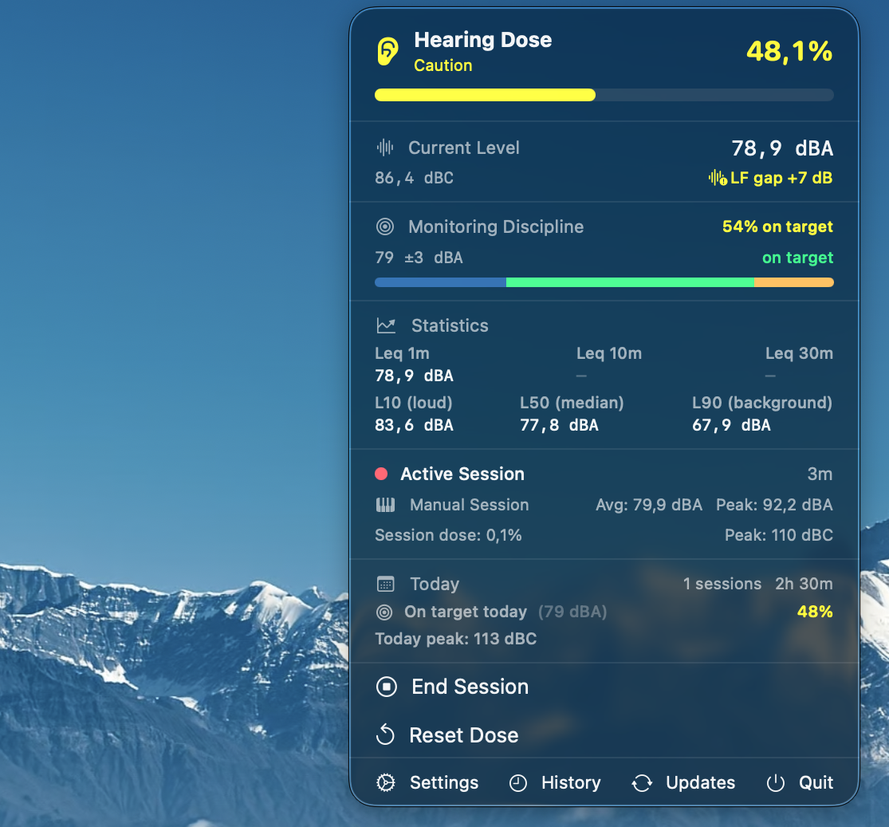

There is one number that explains nearly everything about safe loudness exposure for audio professionals, and most working engineers have never been told it. The number is 3 dB. Every 3 dB increase in your monitoring level halves the time you can safely be exposed to it. Every 3 dB decrease doubles it. That's the rule. Everything else is bookkeeping.
Audio people get along fine without knowing this for years, sometimes decades. The reason it eventually catches up to all of us is that 3 dB is a very small change. It is roughly the difference between "today's mix sounds great" and "today's mix sounds really great". It is well below the threshold at which you'd ever describe a session as loud. And it is the difference between a full safe day at the desk and half a day.
Why three
The 3 dB exchange rate isn't arbitrary. It is the energy-doubling boundary. Sound pressure is logarithmic, and a 3 dB increase corresponds to twice the acoustic energy reaching the eardrum. Twice the energy in twice the time produces the same total dose. So if 85 dBA for 8 hours is the budget, 88 dBA for 4 hours uses the same budget. So does 91 dBA for 2 hours. So does 94 dBA for 1 hour. The numbers chase each other in a tidy logarithmic ladder.
This is the model the National Institute for Occupational Safety and Health uses. The relevant paper is from 1998 and the underlying physiology hasn't changed. The cochlea is a mechanical structure. Energy is energy. The 3 dB rule encodes that fact.
| Level | Safe duration (per day) | What this looks like |
|---|---|---|
| 85 dBA | 8 hours | Standard mixing reference |
| 88 dBA | 4 hours | Hot tracking session |
| 91 dBA | 2 hours | Loud playback for clients |
| 94 dBA | 1 hour | Most live mix positions |
| 97 dBA | 30 minutes | Drum tracking room |
| 100 dBA | 15 minutes | Stage front-of-house |
| 103 dBA | 7.5 minutes | Quiet club |
| 106 dBA | 4 minutes | Loud club |
The table extends in both directions. At 82 dBA the safe time doubles to 16 hours — past the limits of a single working day, which is why 80 dBA is the threshold below which dose simply doesn't accumulate. At 109 dBA you have under two minutes. The pattern is so regular that you can derive the entire table from one row plus the rule.
What it actually looks like
The reason this matters in practice is that the difference between a "good" and a "bad" day at your studio is rarely 10 dB. It's almost always 2 to 4 dB. A client comes by, the playback gets pushed up. The reference track sounds quiet, the master gets nudged. The bass needs another dB. None of these moves register as loud; each one shaves an hour or two off what you can safely do today.
What that looks like, after a couple of hours of mixing at a level a few dB above the comfortable reference, is this:

The dose meter is not predicting what's about to happen. It's reporting what has already accumulated. By the time it crosses 70%, the day's flexibility is gone — any further loud listening is borrowing from tomorrow.
The OSHA detour
If you've encountered a different number, it's probably 5 dB. That's the OSHA exchange rate, used in US occupational noise regulations for industrial workers. It was set in 1971, designed for predictable factory noise environments where workers stayed at roughly the same level for an entire shift, and it has been controversial in the audiology community for nearly all of its existence.
The practical difference matters. Under OSHA's 5 dB rule, going from 90 dBA to 95 dBA halves your allowance. Under NIOSH's 3 dB rule, going from 90 to 93 already does. The NIOSH model is more protective by a meaningful margin, and it's the one current research supports. EU Directive 2003/10/EC also uses 3 dB. So does most of the rest of the developed world's occupational noise framework.
For audio professionals — who don't sit at a constant level, who push loud for short bursts and then come back to reference, whose work can't tolerate any meaningful hearing degradation — the OSHA model is dangerously permissive. It exists as a regulatory floor for industrial compliance, not as a guideline for protecting hearing.
Two consequences
The first consequence of taking the 3 dB rule seriously is that "I'll just turn it up for this one section" is no longer free. A 3 dB push for fifteen minutes during a chorus uses the same dose budget as the reference level used for thirty minutes. Across a full session that math compounds. The chorus push doesn't have to be retired — it has to be accounted for.
The second is more useful, and it's the one that actually changes how people work once they internalise it. Going down 3 dB doubles the day. If you mix at 82 dBA instead of 85, your safe budget is 16 hours instead of 8. If you mix at 79, it's 32. Most professional mixing decisions can be made just as well at 79 dBA as at 85, and the engineer who works at 79 has, in cumulative career terms, about double the listening capacity of the one who works at 85.
That isn't a moral argument. It's a math argument. The decisions that matter — relative levels, EQ choices, low-end balance, vocal placement — don't get sharper above 85 dBA, they get harder, because the loudness contours of the ear flatten and everything starts to sound bigger. The mixing tradition of "check it loud, mix it quiet, check it loud again" is exactly right, and it works because it minimises the time spent in the part of the curve where dose accumulates fastest.
What to do with this
The most useful thing you can do with the 3 dB rule is run it on your own habits for a week. Pick a measurement mic — anything reasonably accurate is fine, the relative numbers matter more than absolute precision — and let an SPL meter run while you work. You don't need to change anything yet. Just look at where the level actually sits during a normal day. Compare it to the table above.
If you spend most of your mixing day at 82 to 85 dBA, you're operating well within the budget. Many engineers, when they actually measure for the first time, find they're at 87 to 92 — which means the day's safe time is somewhere between 4 hours and 90 minutes. That's not a "you must change immediately" finding. It's a "now you know" finding. What you do with it is a separate question.
The point of the rule isn't to make studio work feel guilty. It's to take a category of decision that has historically been made by feel — is this too loud? — and put a number underneath it. The number is 3.
For continuous dose tracking on macOS, see Audita — passive A-weighted SPL via any input device, NIOSH dose accumulation, four-state menu bar indicator. Free 7-day trial.